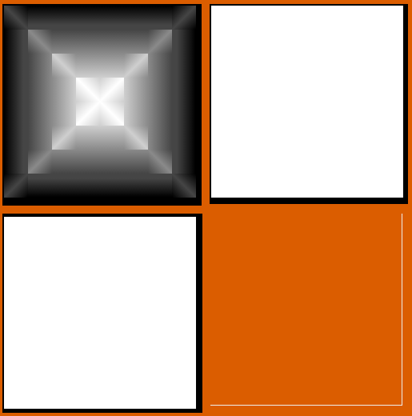
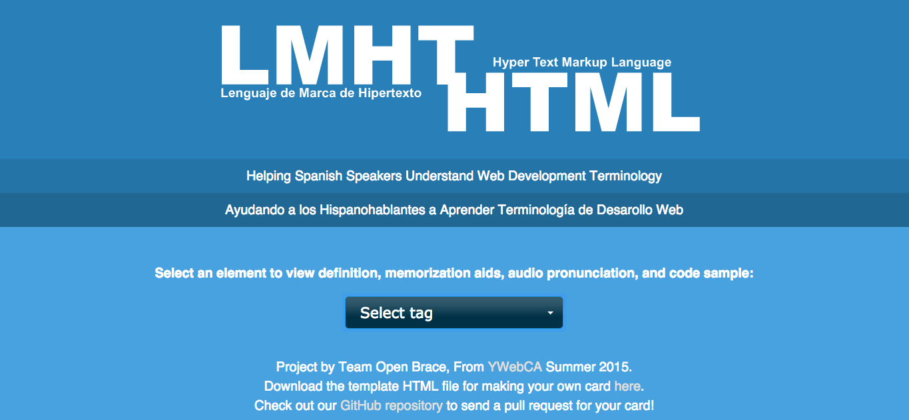

        
        <link type="text/css" rel="stylesheet" href="style.css">


          
        
            <main>
                <ul class='kgp-gallery'>
                  <li>
                      <a href="/zen" target='_blank'></a>
                      <h4>CSS Zen Garden</h4>
                  </li>
                  <li>
                      <a href="/selectors" target='_blank'></a>
                      <h4>CSS Selectors</h4>
                  </li>
                  <li>
                      <a href="/LMHT" target="_blank"></a>
                      <h4>Group Project</h4>
                  </li>
              </ul>
              <div>
                  <div id='description-zen'>
                      <h3>CSS Zen Garden</h3>
                      <p>This was a fun project where the html was already done and we simply had to practice our beginners knowledge of
                           css selectors to design the html page.</p>
                  </div>
                  <div id='description-selectors'>
                      <h3>CSS Selectors</h3>
                      <p>Our CSS moved out of the rookie phase during this project. Challenging, yet rewarding, this project was probably the most fun for me.
                           Using nth child selectors as well as some attributes, I incorporated a triple linear gradient rotated 45 degrees
                          to attain the effect of slicing through an individual cell and creating a pyramid. VERY satisfying.</p>
                  </div>
                  <div id='description-group'>
                      <h3>Group Project</h3>
                      <p>I was elected to be group leader for our capstone project, and was very happy with the idea we all came up with: An open source site to help spanish speakers understand the English terminology behind programming tags. We created a repo on GitHub, pushing and pulling as we built. We used a Jquery UI dropdown list in combination with an Ajax call to render different html documents to the page depending on what the user selects. The website uses an audio file and an idiomatic description for each tag selected to understand. We completed a readme file with explanation on how to easily add another programming tag to our website and continue to build this helpful educational tool!</p>
                  <div>
              </div>
        
        <script src="https://ajax.googleapis.com/ajax/libs/jquery/1.11.3/jquery.min.js"></script>
        <script src='plugin.js'></script>
        <script>
        gallery.init({
          yourclassname: '.gallery'
        });
        </script>
    
